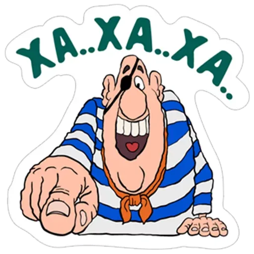
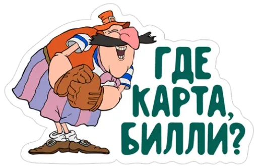
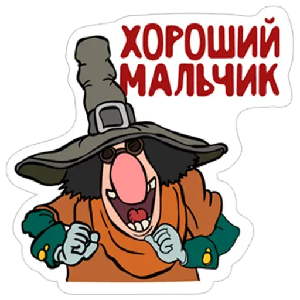
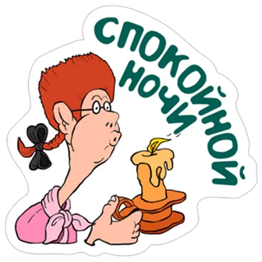
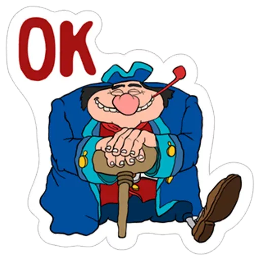
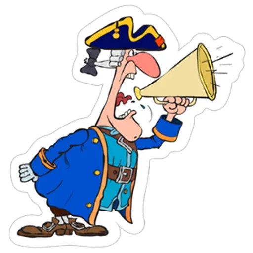
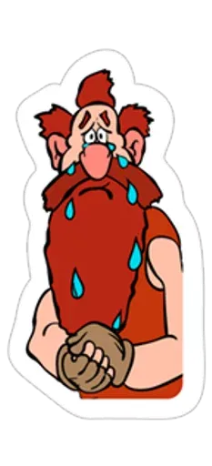

Treasure Island is a Soviet full-length animated feature television film, commissioned by the USSR State Radio and Television at the Kievnauchfilm studio, directed by David Cherkassky based on the novel of the same name by Robert Louis Stevenson. Consists of two parts: Captain Flint's Map (1986) and Captain Flint's Treasure (1988). The premiere took place on Central Television on March 24, 1989.
In this film, animated scenes are interspersed with musical numbers and game scenes filmed with actors and illustrating the events of the cartoon or dealing with certain problems associated with the lifestyle of pirates, such as greed, smoking or alcoholism. At the same time, the manner of filming musical numbers and game episodes differs in different episodes: somewhere the image is in color, somewhere in black and white. One game scene mimics a silent film using intertitles, and in some sequences live footage is combined with animation.
Content
- The Plot
- main characters
- Awards
- Remakes and PC games
the Plot
A live-action scene is shown at the beginning of the film, in which Flint holds a map marked with treasure. Billy Bones kills him and takes the card.
Billy Bones comes to the Admiral Benbow Inn and takes pictures there. Billy asks Jim Hawkins to let him know if he sees a sailor on one leg. Billy has a chronic cold and drinks a lot of rum.
The next day, Billy is visited by his former shipmate Black Dog, who is hunting for a map of Treasure Island. Billy refuses to give him the map, and a fight breaks out between the pirates. Due to the brawl and alcoholism, Bons has a stroke. The optimistic and cheerful Dr. Livesey, after examining Billy, realizes that he will die if he does not quit.
After a while, an old pirate named Blind Pew comes to the tavern and gives Bons a black mark. Due to strong feelings and excessive passion for rum, Billy Bones has an apoplexy, after which he dies. After that, the actors sing a song about the dangers of drunkenness.
Jim takes Flint's card from Billy Bones' chest. A gang of pirates led by Blind Pew searches the tavern. Jim rides to Dr. Livesey. The frightened pirates flee the inn, and Blind Pew dies after rolling off a cliff in a barrel.
Jim arrives at Squire Trelawney's estate with Bones's papers. Upon learning of Flint's map, Trelawney decides to assemble a treasure hunt team and the three travel to Bristol.
At the Spyglass Inn, Jim encounters a hostile pirate. The pirate prepares to take out Jim, but Jim quickly defeats him because he exercises every morning. Actors sing a song about the benefits of sports. The owner of the inn, one-legged John Silver, having learned about the plans of his friends, is ready to provide them with a ship and a crew.
Under the command of Captain Smollett, the heroes on the ship "Hispaniola" are heading for the island. Before sailing, the captain informs Trelawny that he does not like that the sailors know more about the expedition than he, the captain of the ship.
Along the way, a conspiracy unfolds. It turns out that most of the team members consist of pirates who were in the team of Captain Flint, led by Silver, who got a job as a cook on the ship.
Dr. Livesey, Squire Trelawny, Captain Smollett and Jim take refuge in an abandoned fort on the island. John Silver demands the surrender of the fort, but Captain Smollett refuses. After the defense of the fort, Jim falls into the hands of pirates and learns that Dr. Livesey himself gave Silver the map and left the fort with Smollett and Trelawney. Pirates find on the map the place where the treasure is hidden, but they do not find treasure there. They were found long ago by Ben Gunn, a pirate once abandoned on the island. He joins Livesey, Smollett and Trelawney as they attack the pirates together and free Jim. At the end of the Hispaniola, with treasure and captive pirates, sails back to England.
main characters
In the cartoon, when introducing pirates and other characters to the audience, the director's "dossier" technique from the TV movie "Seventeen Moments of Spring" (1973) is used. The version written on the screen does not always coincide with the one voiced. The dossier differs from that described in the book - for example, in Stevenson, John Silver was married to a black woman.
- Billy Bones (aka "Captain"). Owner of the Treasure Island map that started it all. He drinks a lot and always has a cold. The character is nasty. Not married. 
- Black Dog. Captain Flint's friend. Hunts for a map of Treasure Island. The character is secretive. Not married. 
- Dr. Livesey A very nice and cheerful person. The character is sociable. Not married.
- Blind Pew. Also an old pirate and friend of Captain Flint. Cunning and greedy. For the sake of money, he will do anything. The character is vile. Not married. 
- Jim Hawkins. A very, very nice and polite boy. Modest, kind and truthful. He listens to his mother and does exercises every morning. The character is very soft. Not married. 
- Squire Trelawney. Stupid, greedy, gluttonous, lazy, cowardly and arrogant. The character is absent. Not married.
- John Silver (aka "Ham", aka "One-legged") The most terrible pirate, but pretends to be kind, which, however, he succeeds. The character is secretive. Not married. 
- Captain Smollett An old sailor and soldier. He likes to tell everyone the truth in the eye, which is why he suffers. The character is very nasty. Not married. 
- Ben Gunn was a well-mannered boy as a child, but he began to play toss, got involved with pirates and rolled. The character is soft. Not married. 
Unlike the cartoons "The Adventures of Captain Vrungel" and "Doctor Aibolit", David Cherkassky mainly uses hand-drawn animation, but some scenes are made using the flat puppet technique.
awards
- VF television films, Minsk, 1989 - Grand Prize.
- 1st Prize at the IFF TV Films in Czechoslovakia.
- 1st VKF of Animated Film, Kiev, 1989 - prize "For the best feature film".
Remakes and PC games
- In 1992, another purely animated version of this film was released in the United States, called "The Return to Treasure Island", formatted on video. The American cartoon is 34 minutes shorter (without musical numbers) and the original music has been re-sounded.
- In 2005, Action Forms released Treasure Island, an arcade computer game based on and using the graphics of this cartoon. The actors of the original cartoon took part in the dubbing of the game - in particular, Viktor Andrienko and Evgeny Paperny; David Cherkassky is listed in the credits as a director.